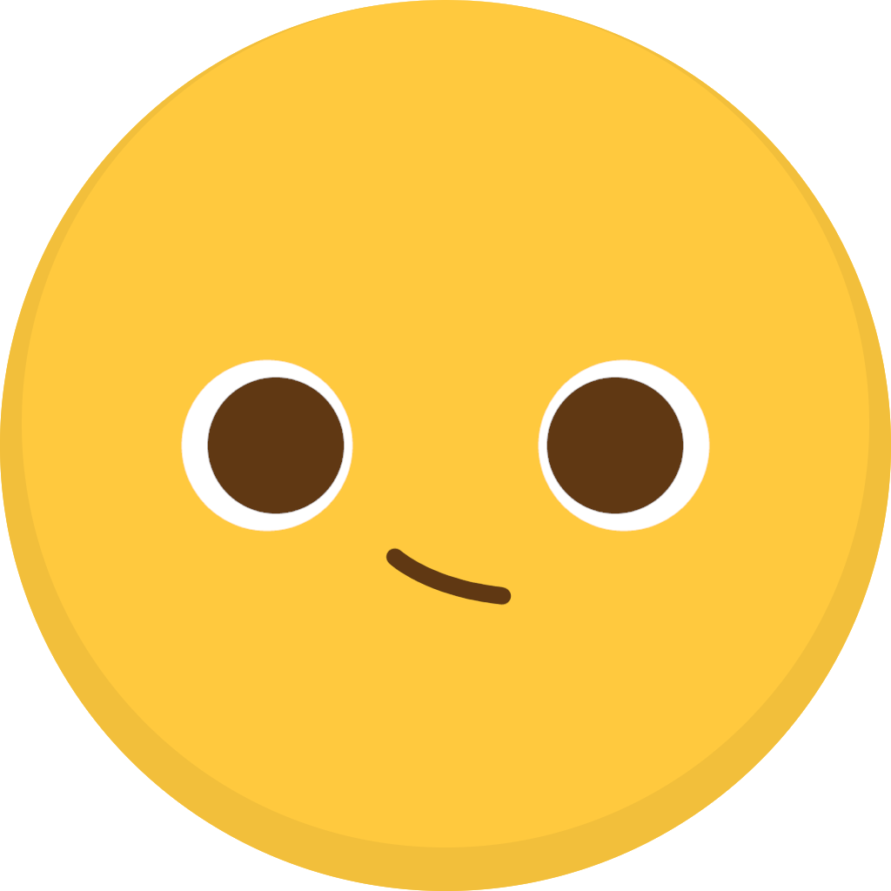

gobo.pw
This is a service you can use to shorten Scratch project, studio, user, and forum links!
Because link shorteners are discouraged on the Scratch website, please only use shortened links on external websites.
Shorten a link:
Output
Click to copy URL